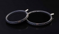

无忌
器材库
全部器材
产品年表
名词百科
榜单
器材库
> 滤光镜 > Fader ND 4-500

耐司
Fader ND 4-500
4.21
综合评分
分类
滤光镜
点评
0 条
图片
0 张
评测
5 篇
NiSi(耐司) 可调ND4-500滤镜是全新开发的一款产品，功能更加强大，并拥有三大产品专利。
产品类型
滤光镜
综合评分
4.21分
无忌评测
低调的强悍-耐司可调ND镜全球首测
规格参数
网友点评
(0)
产品图 / 样片
(0)
评测文章
(5)
详细规格
发布日期
2012
产品类型
减光镜
主要功能
阻挡和减弱进入镜头的光线（同时不改变色彩）。使用ND滤镜使得我们对光圈和快门的控制范围增大了，并且在原有光圈下可以获得长时间快门，达到模糊和动感的效果。
口径
67mm, 72mm, 77mm, 82mm
镀膜
双面12层增强镀膜
连接方式
螺纹式
该产品暂无存档的网友点评
该产品暂无存档的产品图
评测 / 相关文章
详细内容
（存档）
低调的强悍-耐司可调ND镜全球首测
（存档）
耐司Fader ND4-500滤镜试用
（存档）
［资讯］PIE2012 专访耐司滤镜销售总监袁国奎
（存档）
［资讯］PIE 2012：耐司展台一览
（存档）
相关文章
［试用］耐司Fader ND4-500滤镜试用
（存档）
［试用］低调的强悍-耐司可调ND镜全球首测
（存档）
［资讯］NiSi Fader ND4-500 filter
（存档）
［资讯］PIE2012 专访耐司滤镜销售总监袁国奎
（存档）
［资讯］PIE 2012：耐司展台一览
（存档）